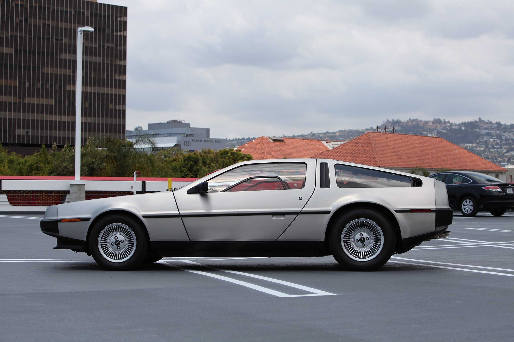
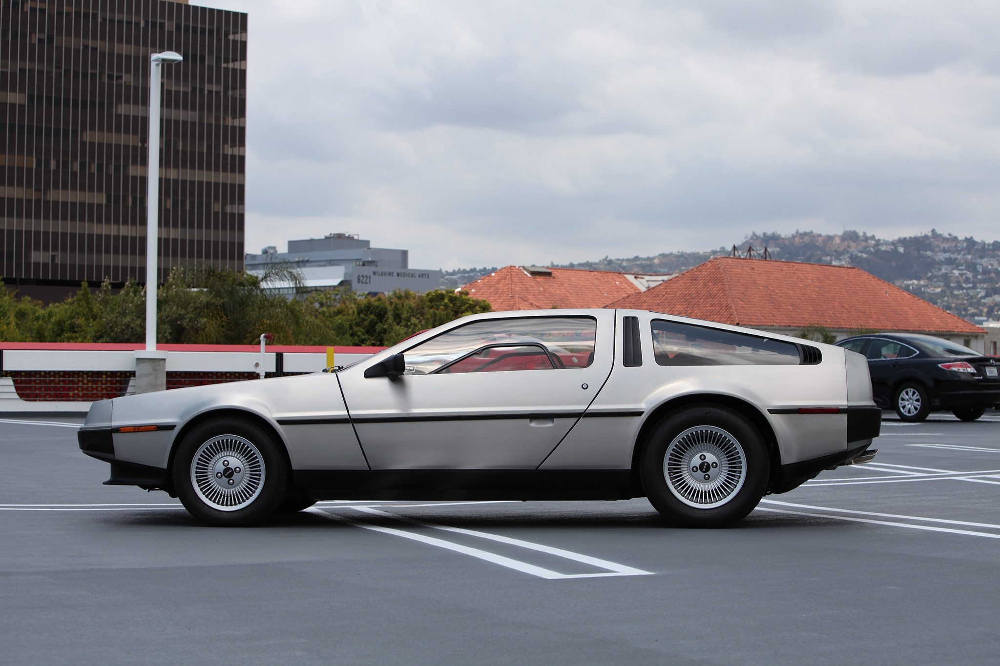

Delorean to dwuosobowy samochód sportowy produkowany seryjnie przez DeLorean Motor Company w latach 1981–1983, planowane było wznowienie produkcji od roku 2017. Powszechnie znany jako DeLorean, jako że był to jedyny samochód produkowany przez przedsiębiorstwo. Pierwszy prototyp ukończono w 1976 roku. W połowie lat 70. John DeLorean porzucił posadę wiceprezesa General Motors, by stworzyć własne auto sportowe. DMC miał modernistyczny, futurystyczny kształt klina, karoserię z nierdzewnej (odporność na korozję), nielakierowanej stali oraz podnoszone do góry drzwi typu skrzydła mewy, jak w Mercedesie 300SL. Konstrukcją układu zawieszenia zajęli się ludzie odpowiedzialni za projekt Lotusa Esprita. 5-biegowa skrzynia pochodziła z Renault, umieszczony z tyłu silnik był wspólnej konstrukcji Peugeota, Renault i Volvo z lat 70. Do dyspozycji był mały płaski bagażnik z przodu, pod maską. Dodatkowo trochę miejsca na bagaż było za oparciami foteli.
W 2007 roku przedsiębiorstwo, które przyjęło nazwę DMC, nie mając jednak żadnego związku z oryginalnym producentem, potwierdziło informację o wznowieniu produkcji ograniczonej liczby modeli DMC-12 przeznaczonych do sprzedaży detalicznej. Nowy DMC-12 ponoć miał być produkowany z oryginalnym silnikiem, w którym jakoby miano wprowadzić kilka ulepszeń zwiększających moc. Wszystkie auta miały rzekomo być składane ręcznie w zakładzie w Teksasie. Informacje te okazały się zabiegiem marketingowym, a przedsiębiorstwo nie otrzymało prawa do nadawania nowych numerów VIN. Samochody reklamowane jako nowo wyprodukowane były w rzeczywistości odrestaurowanymi oryginalnymi samochodami z fabryki w Dunmurry. W roku 2012 wszelkie informacje na temat nowo produkowanych samochodów zostały usunięte z oficjalnej witryny producenta.
Galeria Zdjęć
 
